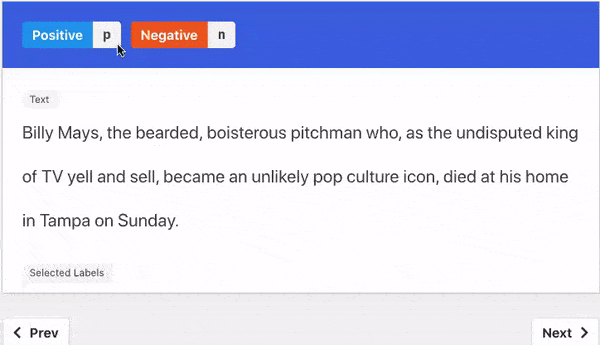
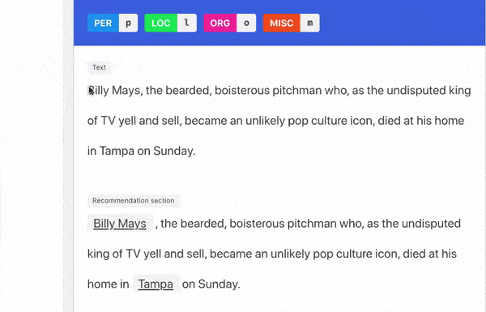
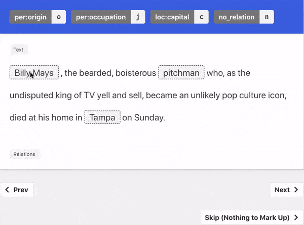
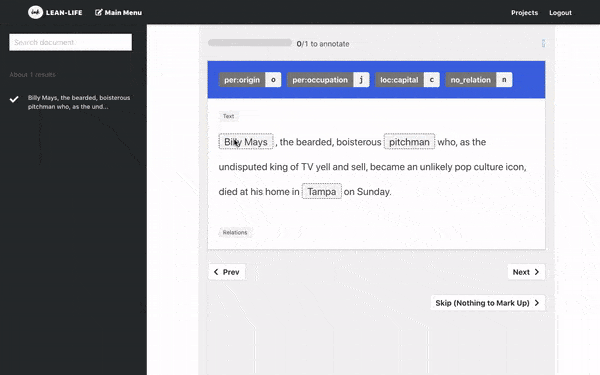
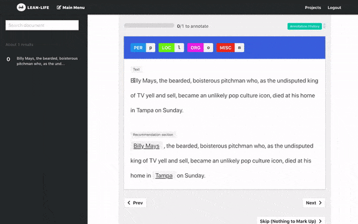

Something about embedding explanation
Selected Recommendation strategies will show here.
If you have selected to use model backed recommendations, but your model server is turned off, the option
will appear as red––indicating an error.
SA Annotation Guideline
NER Annotation Guideline
RE Annotation Guideline
Here's a quick animation on the different ways you can annotate a document
  Natural Language Explanation Guideline
Trigger Explanation Guideline
Here's a quick animation on how to explain your labeling decision.
Please refer to our homepage to get a better understanding of what these explanations are.
 